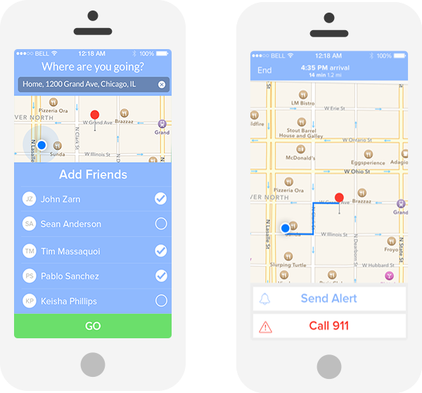

Co-Founder

Ann Arbor, MI
2014 - Present
Companion is a peer-to-peer safety service that improves public safety and provides peace of mind to anyone on the move. Our mobile app allows your family and friends to easily keep an eye on you as you walk home late at night. With the Companion Monitoring Service, Public safety organizations can harness real-time walking data combined with historical walking patterns and a predictive engine to determine the optimal placement of officers. We recently won first place at the Michigan Business Challenge.
